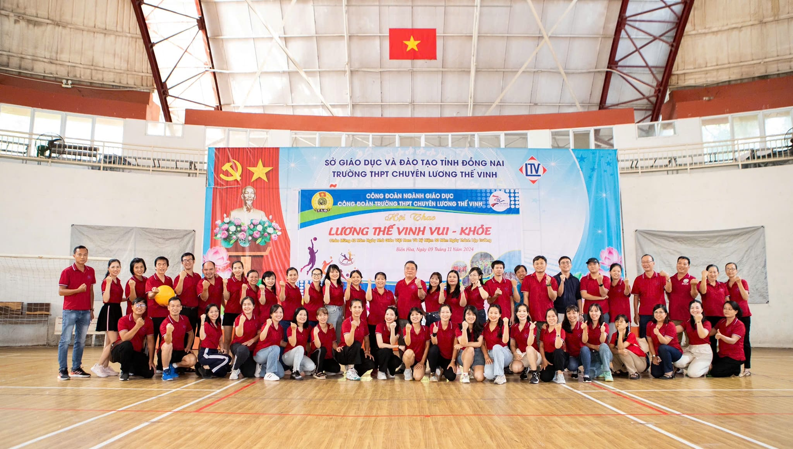

Tổng kết sau 22 năm thành lập (gồm 05 giải Nhất)
08 Nhì, 09 Ba, 14 Khuyến khích (Đội tuyển nòng cốt)
17 Nhất, 58 Nhì, 155 Ba, 212 KK (2025–2026)
Từ 2013–2014 đến nay (03 Nhất, 02 Nhì, 03 Ba, 03 KK)
Kỳ Thi Chọn Học Sinh Giỏi Quốc Gia (1994–2026)
Kể từ năm học đầu tiên 1994–1995 với 8 giải học sinh giỏi quốc gia, Trường THPT Chuyên Lương Thế Vinh luôn giữ vững vị trí nòng cốt trong đội tuyển học sinh giỏi của tỉnh Đồng Nai tại các kỳ thi quốc gia.
Đặc biệt trong những năm học gần đây, số lượng giải của nhà trường luôn chiếm tỷ trọng áp đảo trong tổng số giải thưởng toàn tỉnh:
| Năm học | Tổng số giải | Cơ cấu giải thưởng | Tỷ lệ đóng góp cho Tỉnh |
|---|---|---|---|
| 2025–2026 | 31 giải | 08 Nhì, 09 Ba, 14 Khuyến khích | Đội tuyển nòng cốt tỉnh Đồng Nai |
| 2024–2025 | 58 giải | Chi tiết theo thông báo kỳ thi | 58/61 giải của toàn tỉnh Đồng Nai |
| 2023–2024 | 56 giải | 56 học sinh đoạt giải chính thức | 56/59 giải của toàn tỉnh Đồng Nai |
| 2022–2023 | 34 giải | Đóng góp xuất sắc toàn đoàn | 34/35 giải của toàn tỉnh Đồng Nai |
| 2015–2016 | 36 giải | 07 Nhì, 11 Ba, 18 Khuyến khích | Dẫn đầu khối chuyên Đông Nam Bộ |
| Sau 22 năm (Tổng kết lịch sử) | 540 giải | Bao gồm 05 giải Nhất toàn quốc | Thống kê lịch sử 22 năm |
Nghiên Cứu Khoa Học Kỹ Thuật (KHKT Toàn Quốc)
Tham gia Cuộc thi Khoa học Kỹ thuật cấp quốc gia học sinh trung học từ năm học 2013–2014, học sinh nhà trường đã gặt hái tổng cộng 11 giải thưởng quốc gia (03 giải Nhất, 02 giải Nhì, 03 giải Ba, 03 giải Khuyến khích).
Tiêu biểu trong năm học 2025–2026, hai công trình nghiên cứu sáng tạo của học sinh nhà trường đã xuất sắc chinh phục ban giám khảo quốc gia:
Dự án Thiết kế AcuIRpen
Nghiên cứu ứng dụng công nghệ hồng ngoại và cảm biến chính xác trong thiết bị hỗ trợ y sinh / trị liệu, thể hiện tư duy liên ngành vượt trội và tính khả thi thực tiễn cao của học sinh chuyên Lương Thế Vinh.
Dự án Bloomind
Giải pháp công nghệ hỗ trợ sức khỏe tinh thần và tối ưu hóa năng lượng học tập cho thanh thiếu niên, kết hợp hài hòa giữa thuật toán thông minh và giá trị nhân văn chăm sóc cộng đồng.
Olympic Truyền Thống 30/4 & Đấu Trường Khu Vực
Trường THPT Chuyên Lương Thế Vinh luôn khẳng định vị thế trong nhóm 5 đơn vị dẫn đầu tại các đấu trường học thuật đỉnh cao khu vực phía Nam và quốc tế:
Olympic Truyền Thống 30/4
Tại kỳ thi Olympic 30/4 năm học 2021–2022, đoàn học sinh nhà trường xuất sắc xếp Hạng 3 toàn đoàn trong 56 đơn vị tham dự, giành tổng cộng 51 huy chương danh giá.
Trại Hè Phương Nam Lần Thứ IX
Xuất sắc giành vị trí Giải Nhất Toàn Đoàn tại kỳ giao lưu học thuật truyền thống các trường THPT chuyên khu vực phía Nam, khẳng định chiều sâu chuyên môn vượt trội.
Olympic Khu Vực & Quốc Tế
Ghi danh trên bảng vàng quốc tế với 01 Bằng khen tại Olympic Toán học Châu Á–Thái Bình Dương (APMO) và 01 Bằng khen tại Olympic Tin học Châu Á (APIO năm 2016).
Đường Lên Đỉnh Olympia
Học sinh nhà trường xuất sắc giành Giải Nhì tại trận Chung kết năm toàn quốc, mang cầu truyền hình trực tiếp về trường và lan tỏa niềm tự hào tri thức sâu rộng.
Kỳ Thi Chọn Học Sinh Giỏi Tỉnh Đồng Nai
Tại kỳ thi chọn học sinh giỏi cấp tỉnh lớp 12 (Bảng A) niên khóa 2025–2026, học sinh nhà trường đã lập kỷ lục với 442 giải thưởng, chiếm ưu thế tuyệt đối trên bảng tổng sắp toàn tỉnh:
Giải Nhất
Khẳng định phong độ xuất sắc tuyệt đối ở tất cả các môn khoa học tự nhiên và xã hội.
Giải Nhì
Lực lượng học sinh mũi nhọn đồng đều và có chiều sâu chuyên môn vững vàng.
Giải Ba
Tỷ lệ đoạt giải chiếm ưu thế áp đảo so với các đơn vị tham gia bảng A.
Giải Khuyến Khích
Đóng góp vào tổng thành tích rực rỡ của toàn trường trong năm học 2025–2026.
Phần Thưởng Cao Quý & Huân Chương Lao Động
Ghi nhận những đóng góp đặc biệt xuất sắc cho sự nghiệp giáo dục và đào tạo của tỉnh nhà và cả nước, tập thể sư phạm nhà trường đã vinh dự được Đảng và Nhà nước trao tặng các phần thưởng cao quý:
-
Năm 1997
Bằng khen của Thủ tướng Chính phủ trao tặng tập thể nhà trường và 12 cán bộ, giáo viên tiêu biểu.
-
Năm 1998
Huân chương Lao động hạng Ba do Chủ tịch nước trao tặng tập thể nhà trường và 02 nhà giáo tiêu biểu.
-
Năm 2011
Huân chương Lao động hạng Nhì cho tập thể nhà trường và Cờ thi đua của Chính phủ.
-
Năm 2013
Cờ thi đua của Chính phủ và Cờ thi đua xuất sắc của UBND tỉnh Đồng Nai.
-
Năm 2015
Huân chương Lao động hạng Nhất — phần thưởng cao quý ghi nhận hành trình 20 năm xây dựng và phát triển.
-
Năm 2016
Cờ thi đua xuất sắc của Ủy ban Nhân dân tỉnh Đồng Nai.
Vinh Dự Đón Tiếp Đại Tướng Võ Nguyên Giáp
Trong quá trình hoạt động và phát triển, nhà trường từng vinh dự đón tiếp Đại tướng Võ Nguyên Giáp đến thăm và động viên. Lời căn dặn và tình cảm sâu sắc của Đại tướng mãi là nguồn cổ vũ tinh thần to lớn cho các thế hệ thầy và trò Trường THPT Chuyên Lương Thế Vinh vững bước trên con đường chinh phục đỉnh cao tri thức.
Những Người Thầy Đặt Nền Móng & Cựu Học Sinh Thành Đạt
Thành tựu của ngôi trường hôm nay bắt nguồn từ sự cống hiến thầm lặng của các thế hệ nhà giáo mẫu mực, trong đó có 10 thầy cô giáo được phong tặng danh hiệu Nhà giáo Nhân dân, Nhà giáo Ưu tú:

NGND Trần Anh Dũng
Trực tiếp giảng dạy Toán học, người đặt nền móng quản lý ban đầu và đồng sáng tác biểu trưng (logo) trường năm 1999.
Thầy Nguyễn Duy Phúc
Kiêm Bí thư chi bộ và trực tiếp phụ trách giảng dạy môn Tiếng Anh trong giai đoạn trường mới thành lập.
NGƯT Lê Tự Rô
Tận tụy bồi dưỡng nhiều thế hệ học sinh giỏi quốc gia môn Toán và Tin học đạt giải cao.
NGƯT Hà Huy Quang
Có công lao to lớn trong việc xây dựng chương trình chuyên và đào tạo đội tuyển học sinh giỏi Hóa học của tỉnh.
Thế Hệ Cựu Học Sinh Trưởng Thành Từ Mái Trường
Nhiều thế hệ cựu học sinh đã trưởng thành, trở thành các nhà khoa học, chuyên gia công nghệ và tiến sĩ đang làm việc, nghiên cứu tại các trường đại học và viện nghiên cứu hàng đầu:
Trịnh Thành Thuật
Tiến sĩ tại Đại học Công nghệ Eindhoven (Hà Lan), tiếp tục nghiên cứu chuyên sâu sau tiến sĩ tại Na Uy.
Phạm Hữu Ngôn
Giám đốc công nghệ Công ty Lana (thuộc tập đoàn đầu tư mạo hiểm IDG, Hoa Kỳ).
Nguyễn Hải Phong
Tiến sĩ chuyên ngành Công nghệ thông tin tại Vương quốc Anh, chuyên gia phần mềm cao cấp.
Lê Bá Khiết
Tiến sĩ Toán tối ưu ứng dụng, tham gia nghiên cứu chuyên sâu sau tiến sĩ tại Chile.